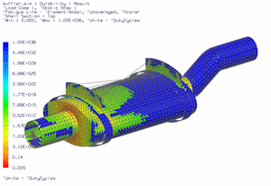

In this tutorial, you will evaluate the fatigue life of a muffler under various loading conditions represented by transient and static solutions. Fatigue life is computed using both low-cycle and high-cycle cases:
Low-cycle calculations need strain results.
High-cycle calculations need stress results.
Launch the Durability analysis of a muffler activity.